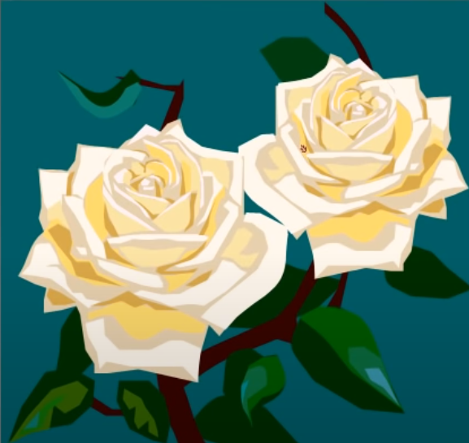

Coisas da vida
A sabedoria não se encontra no topo de nenhuma montanha nem no último ano de um curso superior. É num pequeno
monte de areia do recreio do jardim de infância que se pode aprender tudo o que é necessário na vida:
- partilhar
- respeitar as regras do jogo
- não bater em ninguém
- guardar as coisas nos sítios onde estavam
- manter tudo sempre limpo
- não mexer na coisas dos outros
- pedir desculpa quando se magoa alguém
- viver uma vida equilibrada: estudar, pensar, desenhar, pintar, cantar, dançar, brincar, trabalhar, fazer de
tudo um pouco, todos os dias.

Robert Fulghum